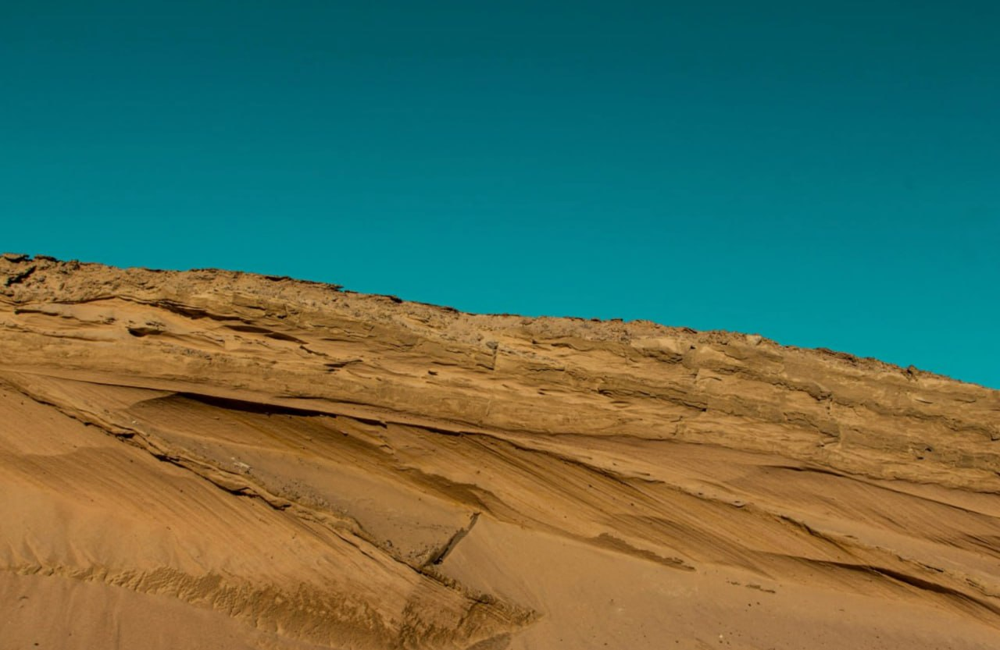

Ласкаво просимо, колоністе. Марс — це не Земля. Тут немає кисню, середня температура -60°C, а замість дощу — пилові бурі. Твоє виживання залежить від знань та підготовки. Чи готовий ти до виклику?
Середня температура на Марсі становить -62°C. Взимку на полюсах вона може падати до -125°C.
Олімп — згаслий вулкан на Марсі, висотою 21 км. Це втричі вище за Еверест!
У Марса є два маленьких місяці — Фобос і Деймос. Вони схожі на картоплини за формою.
На Марсі бувають найбільші пилові бурі в Сонячній системі, які можуть охоплювати всю планету.
Захищає від радіації та забезпечує киснем на 8 годин автономної роботи.
Твоя домівка на Марсі. Має систему регенерації води та захист від піщаних бур.
Швидкий транспорт для дослідження кратерів та пошуку корисних копалин.
Оскільки атмосфера Марса непридатна для дихання, перші колоністи житимуть у спеціальних герметичних модулях. Ці бази захищатимуть людей від радіації та екстремальних температур, а всередині будуть справжні сади для вирощування їжі та вироблення кисню

Відправка перших вантажних ракет з їжею, водою та обладнанням для майбутньої бази.
Висадка першої команди астронавтів. Початок будівництва житлових модулів.
Запуск першого міста під куполом. Початок вирощування рослин у марсіанських теплицях.
Наведи мишку на ілюмінатор, щоб активувати сканер